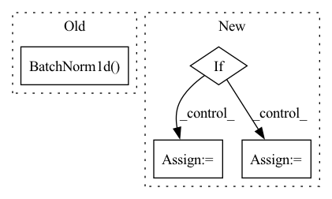

Pattern ID :3842

Before Change
QActivation(activation="sign"),
QLinear(self.num_channels_conv * 4 * 4,
self.num_fc, weight_quantization="sign"),
nn.BatchNorm1d(self.num_fc),
self.activation_function(),
nn.Linear(self.num_fc, num_output),
After Change
super(LeNet, self).__init__(dataset)
self.input_channels = dataset.shape[1]
self.num_output = dataset.num_classes
if lenet_version == 0:
self._model = self.generate_quant_model("sign", "sign")
elif lenet_version == 1:
self._model = self.generate_quant_model("weightdorefa", "weightdorefa")
elif lenet_version == 2:
self._model = self.generate_quant_model("sign", "weightdorefa", weight_quant_2="sign")
elif lenet_version == 3:
self._model = self.generate_quant_model("sign", "weightdorefa")
else:
self._model = nn.Sequential(
nn.Conv2d(self.input_channels, self.num_channels_conv, kernel_size=5),
In pattern: SUPERPATTERN
Frequency: 3
Non-data size: 4
Instances
Fragment ID: 14563550
Project Name: hpi-xnor/bitorch
Commit Name: 3e39cbdcc82f8070eb61e0374a208a405abbd8cb
Time: 2022-05-18
Author: christopher.aust@student.hpi.uni-potsdam.de
File Name: bitorch/models/lenet.py
M Class Name: LeNet
N Class Name: LeNet
M Method Name: __init__(3)
N Method Name: __init__(3)
M Parent Class: Model
N Parent Class: Model
M File Name: bitorch/models/lenet.py
N File Name: bitorch/models/lenet.py
M Start Line: 24
M End Line: 74
N Start Line: 57
N End Line: 88
'>
Before Change
for l_id in range(len(layer_sizes) - 1):
if l_id == len(layer_sizes) - 2:
layers.append(nn.Sequential(
nn.BatchNorm1d(num_features=layer_sizes[l_id]),
nn.Linear(layer_sizes[l_id], layer_sizes[l_id + 1]),
))
else:
After Change
nn.ReLU()
))
self.layers = nn.ModuleList(layers)
if self.variational:
self.fc_mu = nn.Linear(layer_sizes[-1], output_size)
self.fc_var = nn.Linear(layer_sizes[-1], output_size)
def forward(self, x):
for layer in self.layers[:-1]:
'>
Fragment ID: 14563542
Project Name: jameschapman19/cca_zoo
Commit Name: f3943540d139f5dbea5f842373f5b1d3a167c1ee
Time: 2020-12-11
Author: james.chapman.19@ucl.ac.uk
File Name: cca_zoo/deep_models.py
M Class Name: Encoder
N Class Name: Encoder
M Method Name: __init__(5)
N Method Name: __init__(4)
M Parent Class: nn.Module
N Parent Class: nn.Module
M File Name: cca_zoo/deep_models.py
N File Name: cca_zoo/deep_models.py
M Start Line: 20
M End Line: 31
N Start Line: 17
N End Line: 37
'>
Before Change
self.z_dim = z_dim
self.device=device
self.fc1 = nn.Linear(z_dim, hidden_dim, bias = False)
self.bn1 = nn.BatchNorm1d(hidden_dim, affine = False, eps=1e-6, momentum = 0.5)
self.fc2 = nn.Linear(hidden_dim, hidden_dim, bias = False)
self.bn2 = nn.BatchNorm1d(hidden_dim, affine = False, eps=1e-6, momentum = 0.5)
self.fc3 = LinearWeightNorm(hidden_dim, input_dim, weight_scale = 1)
self.bn1_b = Parameter(torch.zeros(hidden_dim))
After Change
self.num_hidden=len(hidden_dim)
self.activations=activations
for _ in range(self.num_hidden):
if _==0:
in_dim=z_dim
else:
in_dim=hidden_dim[_-1]
out_dim=hidden_dim[_]
fc=nn.Linear(in_dim, out_dim, bias=False)
nn.init.xavier_uniform(fc.weight)
'>
Fragment ID: 14563536
Project Name: ygzwqzd/lamda-ssl
Commit Name: ea5ee280fc4c0242970da002d41f42c1aaed9c96
Time: 2022-03-18
Author: 1129198222@qq.com
File Name: Semi_sklearn/Network/ImprovedGan.py
M Class Name: Generator
N Class Name: Generator
M Method Name: __init__(6)
N Method Name: __init__(5)
M Parent Class: nn.Module
N Parent Class: nn.Module
M File Name: Semi_sklearn/Network/ImprovedGan.py
N File Name: Semi_sklearn/Network/ImprovedGan.py
M Start Line: 63
M End Line: 71
N Start Line: 70
N End Line: 91